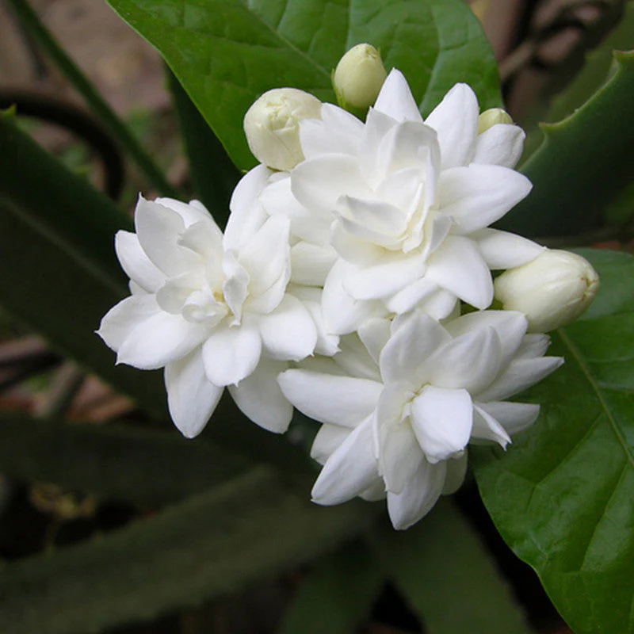

Introduction
Jasmine is a fragrant flowering plant belonging to the Oleaceae family, widely cultivated for its beautiful white or yellow flowers and sweet fragrance. It is native to tropical and subtropical regions of Asia, Europe, and Africa.
Botanical Description
- Scientific Name: Jasminum spp.
- Family: Oleaceae
- Type: Shrub or climbing vine
- Leaves: Glossy green, opposite, simple or pinnate
- Flowers: Small, star-shaped, white or yellow, bloom in summer
- Fruits: Small black or red berries
Uses
- Ornamental: Gardens, balconies, landscapes
- Aromatherapy & Perfume: Essential oils for calming effects
- Medicinal: Treats headaches, stress, skin conditions
- Cultural: Used in religious ceremonies and weddings
- Tea: Flavors teas with sweet aroma
Interesting Facts
- Also called the “Queen of Night” due to night fragrance
- Symbolizes love, purity, and elegance
- Over 200 species worldwide